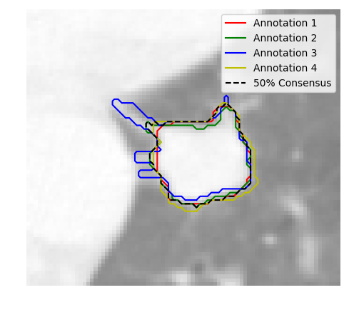

pylidc¶
pylidc is an Object-relational mapping (using SQLAlchemy) for the data provided in the LIDC dataset. This means that the data can be queried in SQL-like fashion, and that the data are also objects that add additional functionality via functions that act on instances of data obtained by querying for particular attributes.
Jump to:

|

|
|  |

|
Installation¶
The module and its dependencies can be installed via pip install pylidc.
Additonal details regarding setting the external data path for CT DICOM data can be found here:
Tutorials¶
The following tutorials sections provide a quick introduction to various aspects of the pylidc module:
Full API¶
A detailed listing of the classes and their respective member functions and attributes are given here:
Full API